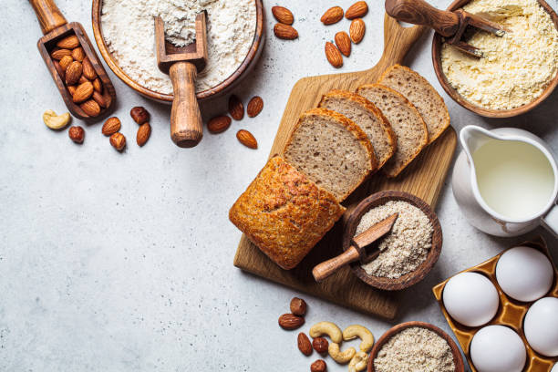

Ingredientes
Harina
La harina puede obtenerse de diferentes cereales. La harina de trigo es el tipo más común de harina utilizada en la cocción del pan. El trigo es rico en gluten, una proteína que da a la masa su elasticidad y fuerza. Cuando la levadura y la harina se mezclan con agua y luego se amasan, las formas de gluten se extiende para crear una red que atrapa las burbujas de dióxido de carbono producido por la levadura. Las recetas con harina de trigo integral tienen menos gluten y crean panes más densos.
Agua
La mayoría del agua del grifo es perfectamente adecuada para hornear pan. Sin embargo, el agua muy dura endurece la masa y hace que la fermentación sea más lenta, mientras que el agua muy suave ablanda la masa, volviéndola pegajosa. En estos casos, es mejor usar agua mineral embotellada. Es el líquido más importante porque hace 2 cosas fundamentales:
Se disuelve y activa la levadura.
Se mezcla con la harina para crear una masa pegajosa y elástica.
Sal
La sal es un ingrediente importante en la cocción del pan, ya que ralentiza el tiempo se subida de la masa permitiendo que el sabor se desarrolle, y se suma al sabor del producto horneado. Para obtener los mejores resultados, no se recomienda omitir la sal en una receta de la levadura.
Levadura
La levadura es el corazón del proceso de panificación. Es el ingrediente esencial que hace que aumente la masa del pan y le da su maravilloso sabor y aroma. En cada paquete de levadura, hay miles de microorganismos. La levadura se alimenta de azúcar o almidón y como parte de su metabolismo desprende pequeñas burbujas de dióxido de carbono. Este gas es lo que hace subir la masa y lograr su textura ligera después de la cocción.
A estos ingredientes para elaborar el pan se le pueden sumar otros dependiendo del tipo de pan: mantequilla, huevos, leche… la imaginación es el límite.